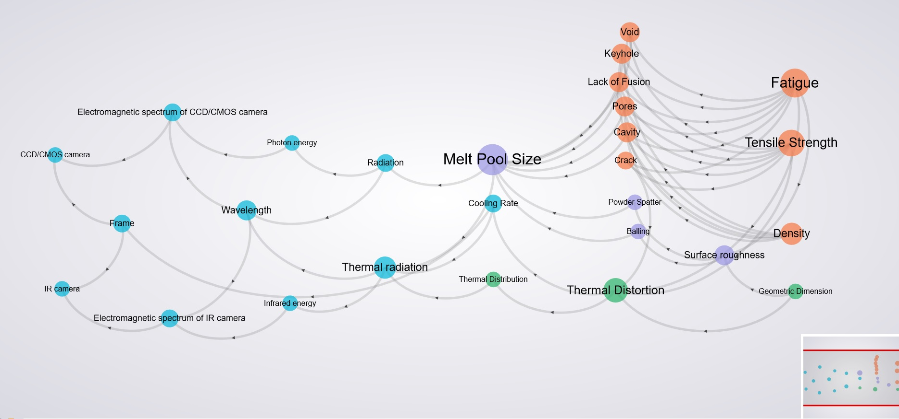

Project Description
We have developed methods to integrate and navigate knowledge graphs from AM process ontology based on updated AM process
ontology to support AM quality management. The AM ontologies developed by Penn State and NIST allowed users to navigate
complex relationships and understand the connections between different process parameters, microstructural characteristics,
and mechanical properties for AM parts. Based on the set of QA/QC requirements, the updated AM process ontology
will be used to generate knowledge graphs for each requirement. The knowledge graph shows high-level links between measurable
process parameters and mechanical properties (e.g., porosity, density, fatigue, tensile strength, GD&T). These links are influenced by the resulting
and causing physical phenomenon.